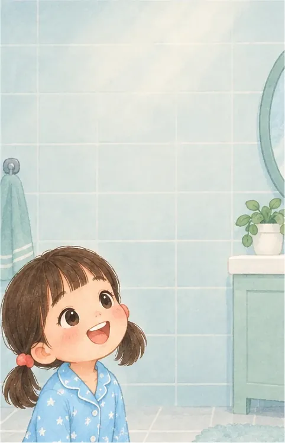
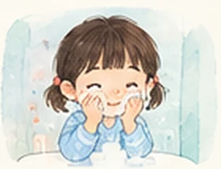
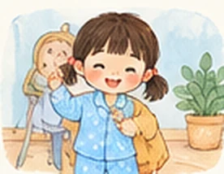
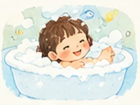
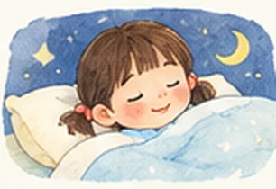

릴리의 하루
아침부터 밤까지, 하루 7권







가입하면 7편 모두 들을 수 있어요. 지금 시작하기
부모님께
 하루 2분이면 충분해요자주 짧게 듣는 게 오래 한 번 듣는 것보다 낫습니다.
하루 2분이면 충분해요자주 짧게 듣는 게 오래 한 번 듣는 것보다 낫습니다.- 생활 장면에서 한 번 더양치할 때 "Brush my teeth!" 한마디면 충분해요.
 아이 정보는 받지 않아요부모님 계정만 만들면 됩니다. 아이 이름과 사진은 받지 않아요.
아이 정보는 받지 않아요부모님 계정만 만들면 됩니다. 아이 이름과 사진은 받지 않아요.
자주 묻는 질문
- 몇 살부터 할 수 있나요?
- 4~7세가 가장 잘 맞아요. 3세도 그림 보는 걸 좋아하면 함께 할 수 있어요.
- 아이 정보를 받나요?
- 아이 이름, 사진, 학교 정보는 받지 않아요. 부모님 계정만 만들면 됩니다.
- 무료인가요?
- EP01은 무료로 들을 수 있어요. 가입하면 7편 모두 들을 수 있습니다.